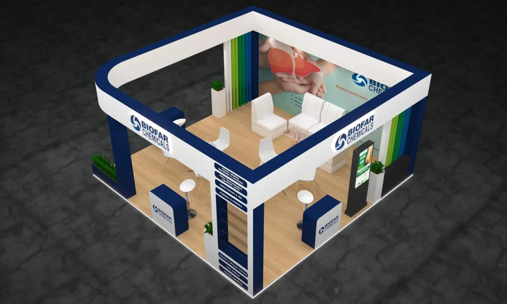
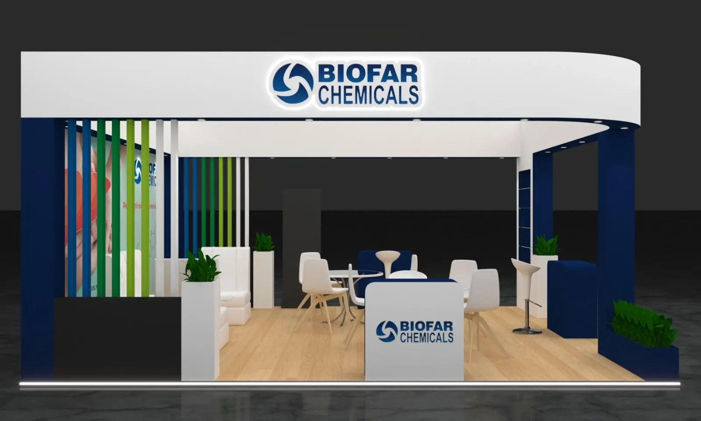
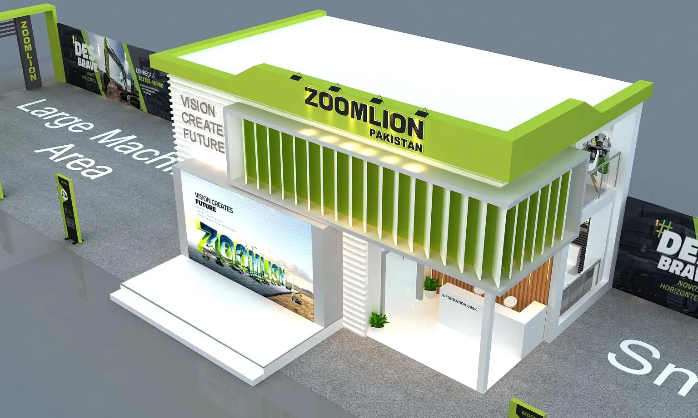

Custom Trade Show Booth Design
Custom trade show booth design built around your floor space, not a template.
A custom booth starts with your dimensions, your audience and your goals for the show — then works outward into layout, branding, graphics and visitor flow. Nothing gets designed in isolation, so the graphics, the structure and the walkway between them are all solving the same problem.
Why custom design matters
Poor booth design creates problems that graphics alone can't fix.
Most underperforming booths aren't ugly — they're unplanned. The issues below show up again and again on the show floor, and each one is a design decision, not a budget problem.
The message doesn't land
A visitor has seconds to understand what a company does while walking past. If the layout buries the message behind furniture, signage placed too low, or visual clutter, the booth stops working before a conversation even starts.
Space works against you
A booth can have plenty of square footage and still feel cramped or empty, depending on how that space is zoned and where the eye is drawn first. More floor space doesn't fix a layout problem — it just makes it more visible.
Flow creates friction
Counters and displays placed without a flow plan can block entry points, crowd walkways, or leave staff with nowhere natural to greet visitors as they approach.
What custom booth design covers
Every element of the space is designed to work together.
Custom trade show booth design isn't a single deliverable — it's a set of interconnected decisions about layout, materials and messaging. If you're exhibiting at a Dallas-area venue such as the Kay Bailey Hutchison Convention Center or Dallas Market Hall, see how local logistics and show rules factor into the process on our Dallas trade show design page.
Booth layout & zoning
Dividing your footprint into functional areas — product display, demo space, meeting area, storage — based on how the space will actually be used.
Visitor flow
Planning entry points and walkways so visitors move naturally through the space instead of bottlenecking at the aisle.
Branding & messaging
Making sure your brand and core message are visible and legible from the aisle — not just up close.
Product presentation
Positioning what you're showing — physical products, demos or screens — where it gets seen and where it supports a conversation.
Lighting & graphics
Using lighting and large-format graphics to draw attention to the right areas and reinforce the booth's message.
Storage & meeting space
Working in practical needs — literature, giveaways, private conversations — without letting them compete with the public-facing areas.
Lead-generation considerations
Designing spaces where staff can naturally start conversations and capture leads, rather than leaving that to chance.
Design visualization
Concepts developed against your actual booth dimensions, so what you approve reflects what will be built.
Design is only half the decision. Depending on your event space and how often you exhibit, we can also help you choose the right trade show booth display format to build the design on — custom exhibit, modular, or portable.
Selected work
Custom design concepts built for a range of exhibitors.
A sample of recent custom booth design concepts — each one starting from the client's floor space, product story and show goals, not a template.

Backlit product niches and a wraparound header built to keep the product line as the focal point.

An open frame and low counters keep sightlines clear from the aisle into the display wall.

A corner footprint used for two-sided branding, with shelving planned around hero products.

A lounge-style layout designed for longer, seated conversations rather than quick walk-bys.

Zoning from above: reception, seating and a storage tower planned to keep the floor uncluttered.

A wide open front invites visitors in rather than forcing them through a narrow entry point.

A second level adds private meeting space without giving up ground-floor product area.

Planned in context with the surrounding aisle so the structure reads clearly from a distance.
Renderings shown are design concepts developed for client presentations and show planning, ahead of production and build-out.
Budgeting for custom design
What a custom booth design project typically costs.
Every project is scoped individually, but exhibitors researching a custom build usually want a ballpark before reaching out. Here's a general industry range by footprint — for the full breakdown of what drives the number, see the complete cost guide.
Compact custom booth
A fully custom 10×10 with dedicated structure, lighting and graphics generally starts in the low five figures, well above a basic portable display but built specifically around your brand.
Mid-size custom booth
With room for distinct zones — display, meeting area, storage — costs step up accordingly and commonly land in the mid five figures depending on finish level and technology.
Custom island exhibits
Larger custom islands and double-deck structures carry the widest range, often reaching well into six figures, driven mainly by technology, custom fabrication and finish quality.
These are general planning ranges, not a quote — actual cost depends on materials, technology and show requirements. Share your booth size and goals through the free consultation for a figure specific to your project.
How a project starts
From your goals to a booth design concept.
Share the basics
Booth size, upcoming show and what the space needs to accomplish.
Get a design concept
An initial layout and design direction, starting with the free consultation.
Develop the design
Layout, branding, graphics and flow refined into a complete design.
Prepare for production
Final files handed off for build-out ahead of your show date.
Common questions
Custom booth design, answered simply.
It depends on scope, but starting the process well before your show date gives layout, branding and production the time they need without a rushed final week. The free consultation is a good first step to get a realistic timeline for your specific show date.
That depends on how often you exhibit and whether your footprint changes between shows. Custom exhibits suit a single flagship show; modular and portable displays suit exhibitors attending multiple shows a year, since the same components get reused instead of rebuilt each time. See custom exhibits vs. modular vs. portable displays for a full comparison.
That's usually a layout issue rather than a graphics issue — common causes include buried messaging, blocked entry points, and no clear focal point. See common booth design mistakes for the most frequent, fixable causes.
Start Your Project
Get a free design concept for your booth.
Share your booth size and goals, and we'll put together an initial layout concept — a useful first step before committing to a full design engagement.